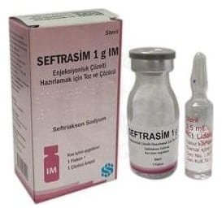

Seftrasim 1 G IM Enjeksiyonluk Çözelti Hazırlamak İçin Toz ve Çözücü, 1 FLAKON + 1 ÇÖZÜCÜ AMPUL

Ne için kullanılır
KT · Bölüm 1SEFTRASİM, seftriakson adı verilen etkin maddeyi içermektedir. Seftriakson, antibiyotikler adı verilen ilaç grubuna dahildir. SEFTRASİM etkisini bakterilerin tam olarak gelişimini durdurarak göstermektedir. Bu da bakterilerin ölmesine yol açmaktadır. SEFTRASİM krem renkli akıcı toz içermekte ve cam flakonlarda takdim edilmektedir. Her bir karton kutuda; 1 adet flakon ve 3,5 ml’lik %1 lidokain hidroklorür çözeltisi içeren 1 adet ampul bulunmaktadır. Bir ampul 35 mg susuz lidokain hidroklorüre eşdeğer 37,31 mg lidokain hidroklorür monohidrat ve steril enjeksiyonluk su içerir. SEFTRASİM bakterilerin yol açtığı ve vücudun çeşitli kısımlarındaki çeşitli enfeksiyonların tedavisinde kullanılır. SEFTRASİM aşağıda belirtilen hastalıklar için kullanılabilir. – Sepsis (bakterilerin kana geçmesi sonucunda ateş ve titremeye neden olan hastalık), – Beyin zarı iltihabı (menenjit), – Kene yoluyla bulaşan bir hastalık olan dissemine Lyme borreliosis’in erken ve geç evrelerinde, – Karın bölgesi (abdominal) enfeksiyonlar (karın zarı iltihabı, safra ve mide-bağırsak sistemi enfeksiyonları), – Kemik, eklem, yumuşak doku, cilt ve yara enfeksiyonları, – Bağışıklık sistemi bozukluğuna bağlı enfeksiyonlar, – Böbrek ve idrar yolları enfeksiyonları, – Solunum yolları enfeksiyonları, özellikle pnömoni (bir tür akciğer enfeksiyonu), kulak- burun-boğaz enfeksiyonları, akut bakteriyel komplike olmayan otitis media (orta kulak iltihabı), – Cinsel yoldan bulaşan bir enfeksiyon olan gonore (bel soğukluğu) dahil olmak üzere genital enfeksiyonlar, – Ameliyatlardan önce enfeksiyonların oluşmasının önlenmesi